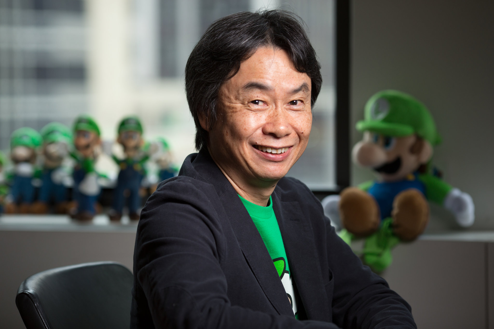

Mario, previously known as Jumpman, and developed under the nickname Mr. Video, is the main protagonist of the Mario series and the mascot for Nintendo. He was created by Nintendo's Shigeru Miyamoto, and has appeared in over 200 games. Originally, he only appeared in platform games.  However, he now also features in sporting games, racing games, and fighting games and others. He is considered by many to be the most famous character in video game history, and is known to many as "The Face of Video Games," having 6 games out of the top 10 on the list of best-selling video games of all time.
Mario is a short Italian plumber who lives in the Mushroom Kingdom. In the Mario series, he uses his well-known jump and combat abilities to stop Bowser from kidnapping Princess Peach and taking over the Mushroom Kingdom. Along with Luigi, has had other friends such as Yoshi and Toad. Along with Bowser, he has had other enemies such as Fawful, Wario, and Donkey Kong. In the cartoons Mario was voiced by Peter Cullen Saturday Supercade, WWF/E Hall of Fame wrestler-turned manager the late "Captain" Lou Albano in The Super Mario Bros. Super Show!, Walker Boone in The Adventures of Super Mario Bros. 3 and Super Mario World. In the live-action movie Super Mario Bros., he was played by the late Bob Hoskins. In the video games, Mario is currently, voiced by Charles Martinet. |
| Home | Characters | Pictures |